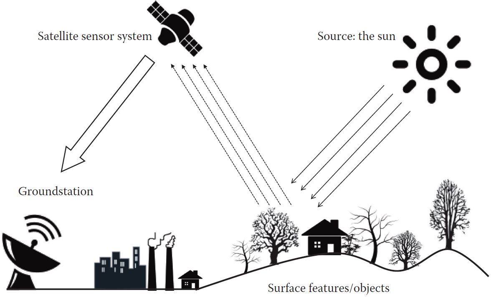

«سنجش از دور» به مجموعه روشهایی گفته میشود که با استفاده از سنسورها در ماهوارهها، هواپیماها یا پهپادها، اطلاعات سطح زمین بدون تماس فیزیکی جمعآوری میشود. ایده اصلی این علم از دههی ۱۹۶۰ با پرتاب اولین ماهوارههای زمینمشاهده شکل گرفت و در دهههای بعد با برنامههایی مثل Landsat وارد مرحله کاربردی شد. امروزه به لطف ماهوارههایی نظیر Sentinel‑2 (آژانس فضایی اروپا)، امکان ثبت دورهای سطح زمین با وضوح مکانی، زمانی و طیفی بالا فراهم شده است. این دادهها بهویژه در کشاورزی دقیق، مدیریت منابع آب، پایش خشکسالی، محیطزیست و برنامهریزی شهری نقش اساسی دارند. بهطور خلاصه، سنجش از دور به ما اجازه میدهد بدون حضور در مزرعه یا منطقه، وضعیت پوشش گیاهی، آب، خاک، رطوبت، دما و سلامت گیاه را تحلیل کنیم.

پایهی علمی سنجش از دور بر اندازهگیری انرژی الکترومغناطیسی بازتابشده یا منتشرشده از سطح زمین است. هر پدیده (گیاه، خاک، آب) یک امضای طیفی دارد که رفتار آن را در طولموجهای مختلف نشان میدهد. با استفاده از این ویژگی، شاخصهای مهمی مانند: